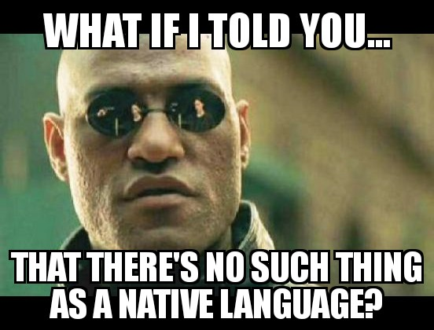

There is no such thing as a native language or a native dialect or accent. You don’t have one. I don’t have one. No one does.
The word “native” comes from the Old French natif, which comes from the Latin nātīvus, which itself comes from nātus (also Latin), the past participle of nāscī, to be born.
“Native” means:
- Being such by birth.
- Existing in or belonging to one by nature; innate.
But you weren’t born speaking any language at all. And no human language exists or belongs in you by nature — all that exists is the ability to imitate (and, eventually, understand) sounds and symbols. So that takes care of that. A language isn’t “native” to you any more than a selfie of you is “native” to your SD card.
So if none of us has a native language, then what do we have?
I thought you’d never ask.
The languages you know (i.e. can use) are like sports teams in the Premier League. Some get better than others and some stay better than others — sometimes for your whole life. But that’s not because they were “first” (England isn’t the best at football or cricket; VisiCalc isn’t the best at spreadsheets; most of the early PC manufacturers don’t even exist any more), it’s because they play and continue to play best. If they don’t play well, they get kicked out of the Premier League — language skill can deteriorate, evaporate and even disappear completely, like the freaking Aral Sea (RIP). Languages from the lower divisions can also rise up. In other words, there is flux, and this flux is constant; the system only seems stable or permanent because of repetition, feedback loops and other stuff we may or may not get into.
In more concrete terms, what does it mean, then, for a language (or dialect or accent) to “play” best?
That’s right. Sports metaphors get tired quickly, so we’re moving back to maths and nuclear physics, a much richer source of cognitive shortcuts and tools of understanding, at least for our purposes. Now, as you know, I don’t know much about anything, and I’m not very smart, so I’m going to abuse the terminology of those fields, but it’s for a good cause, so forgive me in advance lol.
Every language, dialect, sociolect, accent, idiolect…every “lect”, regardless of whether or not you are used to it, is like a mathematical function, f(e・b).
- e = environment
- b = behavior
Your skill (or lack thereof) with a language is a continuous function 2 of your environment and behavior. There is no magical singularity 3 called “birth” 4 that either gives you “native” language ability or takes it away. All that matters is your local, immediate, three-foot-radius environment and behavior.
What does this mean? It means that if you change the inputs to the function, then the outputs will change 5. That’s why even Queen Elizabeth II’s accent has changed since her twenties — she sounds less posh than she used to; her environment, her society, no longer rewards Received Pronunciation to the same extent that it used to, so her behavior has changed, subtly, but (to the attentive) noticeably. It’s why Patrick Stewart can’t even seem to do a proper impression of his “native” Yorkshire (?) accent any more; the man was plumber — a literal “biuwdah” [builder] at the beginning of his adult life — but has spent so much time acting like a gentleman that he has become one.
Inputs and outputs. Environments and behaviors. This also means that everything you do counts. Everything you do matters. If you do nothing (zero inputs), you get nothing. If you do something, you get something. If you do something big, deep and/or long enough, you get some big, deep and long outputs. It’s not quite that linear, at least in terms of perception (hence intermediate angst), but it really is that simple. Too simple, in my humble opinion, to require a blog to explain it.
But you know what? The things that go without saying seem to need the most saying. And the things that are easy to do are easy not to do. So let’s keep saying and doing them.
No language or sub-language belongs to you — except the ones you earn — and continue to earn! And you can, if you control your environment and behavior — if you pay the price — [l]earn any language. So every language (or, perhaps more accurately, any language), potentially, belongs to you. You own it. It’s yours. Take it. Time is money. You pay for it 6 by spending time with it.
You don’t learn a language, you get used to it. You don’t learn a language, you earn a language. You earn it by behaving in ways that make it keep entering your head. There is no language aristocracy. Nobody is born into a language the way some people are born not needing sunblock. No. We’re all on the same playing field. It’s a true democracy. A “democracy of habit”, as Twyla Tharp famously put it. No. No, it’s better than a mere democracy. It’s a meritocracy. Perhaps the purest meritocracy we have at this scale. And in this meritocracy, you vote and are rewarded by how you spend your time. Your skill is only a function of how you spend your time.
You don’t earn the right to enjoy FUNBUN (for-native by-native) Japanese by being good at Japanese, you get good at Japanese by spending time with FUNBUN Japanese. And everybody has to do this. Everybody has to pay the price — and keep paying it forever, on subscription — there are no freebies.
So stop worrying about who came out of what vag where (lol). Start worrying about about your TV and your SRS.
- “Art is a vast democracy of habit.” [10 Powerful Lessons from Twyla Tharp’s “The Creative Habit” via @writerspotlight] goo.gl/YmjSkH
- “It’s the most acclaimed and skilled people who work the hardest to maintain those skills. The greatest (and highest paid) athletes, like Tiger Woods and Michael Jordan, practice harder, longer, and better than their rivals. ” [An Artist’s Bookshelf – “The Creative Habit” by Twyla Tharp] goo.gl/g5kfDK
- “The secret to meaningful progress at anything is showing up” [Creativity is Not a Trait. It’s a Habit – The Mission – Medium] goo.gl/KqXU8C
Notes:
- I realize playing the “X is true because the dictionary says so” game is, at best, like noughts and crosses, nothing but a way to end up in a permanent stalemate. And that’s not the game we’re playing…so, just…bear with me for the purposes of illustration. ↩
- used here as much in the colloquial sense as the mathematical one ↩
- discontinuity ↩
- Or, for that matter, puberty. The “critical period” was exclusively to do with feral children (not normal spoiled whiners like you or me or anyone who is literate and has Internet access); it’s not the last time you can learn languages to “native” level; it’s the time by which you must learn a language — any dialect of Humanese — or start to have trouble with concepts such as “I” (individuality); you know concepts, so you’re golden. You can learn any language, playa. ↩
- Most people, as it turns out, keep the inputs the same: they are born, raised, live and die in the same place — and even if they emigrate, they remain surrounded by fellow speakers — so their language profile seems more or less permanent, but this is an illusion. ↩
- the language, silly! ↩
Great post, Katz. Feels like good ol’ AJATT.
…It’s my first comment on this blog, and I just wanted to say that AJATT to me was for a long time, and still is, an enormous help and motivation, not only in my Japanese learning, but also in life in general (lately I am just changing “Japanese language” to “any skill” in my head. Btw, Anki is LEGENDARY, I even use it for some of my drawing practice now), so thank you man 🙂
Hope my English is not too terrible!